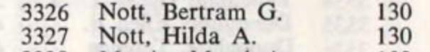

Valentine Frank Culmer 1894 - 1962
[ Home ] | [ Calendar ] | [ Surnames Index ] | [ Errors ] | [ Family History ]An electric hammer driver and the child of Charles Culmer (a coal dealer) and Mary Lawrence, Valentine Culmer, the second cousin twice-removed on the mother's side of Nigel Horne, was born in Faversham, Kent, England on 14 Oct 18941,2,3,4, was baptised there at St Mary of Charity Church, Church Road on 2 Dec 1894 and married Sarah Button (with whom he had 1 child, Edwin John) in Milton, Kent, England around Aug 19216.
During his life, he was living at 19 Cecil Avenue, Strood, Kent on 31 Mar 19011 - less than a mile from his brother Albert Thomas who was living at 22 Station Road, Frindsbury, Kent; at 39 Cross Street, Strood, Kent on 2 Apr 19117 - less than a mile from his brother Albert Thomas, brother Charles Culmer, sister Emily Culmer and mother Mary Lawrence who were living at 14 Hone Street, Strood, Kent; at 60 Prospect Vale, Woolwich, London, England in 1937 and on 29 Sept 19392; and at 246 Chipperfield Road, St Paul's Cray, Kent in 1962. He served in the army from 25 Oct 1915 to 18 Apr 1918 in France (regiment: Royal West Kent Regiment; Service number: 10387).
He died on 20 Jul 1962 at Orpington Hospital, Bromley, Kent4,5.
Parents
- Charles was born c. Nov 1855
- Mary Ann was born on 23 Jan 1853
Children
- Edwin John was born c. May 1924
Citations
- 1901 England, Wales & Scotland Census - Findmypast (was age 6 and the son of the head of the household)
- 1939 Register - Findmypast (was the head of the household)
- England & Wales births 1837-2006 - Findmypast
- England & Wales deaths 1837-2007 - Findmypast
- England & Wales Government Probate Death Index 1858-2019 - Findmypast
- England & Wales Marriages 1837-2005 - Findmypast
- 1911 Census for England & Wales - Findmypast (was age 16 and the son of the head of the household)
Media
Valentine Culmer - Probate
1962 Electoral Register

England & Wales births 1837-2006 - BMD/B/1894/4/AZ/000136/082
1911 England, Wales & Scotland Census Transcription - GBC-1911-RG14-03869-0717-5
England & Wales deaths 1837-2007 Transcription - BMD-D-1962-3-AZ-000196-129
England & Wales marriages 1837-2005 - BMD/M/1921/3/AZ/000288/027
Kent, Canterbury Archdeaconry Baptisms Transcription - GBPRS-CANT-B-96263271
British Army Service Records 1914-1920 Transcription - GBM-WO363-4-SUPP-328981
Silver War Badge Roll 1914-1920 - GBM-SILVERWAR-BADGES-638050
1939 Register Transcription - TNA-R39-0644-0644C-009-17
England Births & Baptisms 1538-1975 - R_885852071
1901 England, Wales & Scotland Census Transcription - GBC-1901-0003111599
England & Wales Government Probate Death Index 1858-2019 - GBOR/GOVPROBATE/C/1962-1962/00055493
Family Tree

Map
Generated by ged2site. Last updated on Jul 3, 2024
Known Issues
Residence record for 1937 contains no citation
Residence record for 1962 contains no citation
Listed in the residence for 1937, but spouse Sarah Button is not
Listed in the residence for 1962, but spouse Sarah Button is not